Una colección de 8,128 generativos. NFTs.
El 50% de las regalías de menta y secundarias irán a los Illuminati. Colectivo, un DAO de gobernanza para la comunidad.

A ti que das testimonio, te decimos BIENVENIDO.
Somos los proféticos severos, los presentes impenitentes que entran en los nidos secretos y serpenteantes de CONOCIMIENTO y seguir los principios de la VERDAD sin resentimiento.
Somos lo desconocido que saben. Somos los que PERMANECEN.
Después de siglos de rituales, cálculos, sacrificios e investigaciones, les presentamos algunos:
El token no fungible Illuminati—el REFRENDAR para una sociedad secreta en la cadena de bloques.
Estas 8128 generativas FICHAS, creadas en el caos, el fuego y MAGIA, se entregará únicamente al DEVOTO en un tiempo no revelado. Esta iconografía, revelada a las mentes de nuestro sacerdocio en visiones a través de los susurros de espíritus y demonios, está disponible solo para aquellos que anhelanCONOCIMIENTO y SABIDURÍA, Y que buscan elevar los de los grandes.MÉRITO y los de granLOGRO.
Si desea ver la VERDAD, si desea ocupar su lugar en el CIRCULO, debes ser lo suficientemente valiente para mirar.
Aunque se rumorea ampliamente que Alex Taub es, de hecho, tres clones idénticos y altamente motivados, la verdad es mucho más simple y mucho más extraña: posee una voluntad aguda y enfocada, y un antiguo poder arcano conocido como Great Do. The Great Do permite a AJT realizar múltiples tareas a una velocidad sobrehumana, al mismo tiempo que dirige cualquier número de grupos de mortales, espíritus y construcciones afines para realizar tareas de una variedad casi inimaginable. Aunque no está claro cómo se adquiere el Gran Do, se cree que solo una persona en una generación puede controlar este poder y que, a lo largo de la historia, la mayoría de sus poseedores más famosos fueron generales (en particular, Ciro el Grande, Julio César y Jorge S. Patton). AJT ha puesto el poder de Great Do en un uso más pacífico: escribiendo publicaciones en blogs, fundando varias empresas (incluida Upstream, una red social profesional) y enseñando clases de desarrollo empresarial, todo mientras actúa como uno de los Triunvirato de Antiguos de los Illuminati. Solo trata de mantenerte al día.
Como uno de los antiguos invocadores de los Illuminati, Kuriyama ha viajado por el mundo reuniendo equipos para varias misiones, todos dedicados a liberar mentes y almas atrapadas por las estructuras que buscan mantenernos atados e irreflexivos. No está claro si sus visiones recurrentes del futuro son predictivas o si realmente altera el camino del futuro con su mente, aunque algunos han especulado que su apodo "Timehacker" sugiere lo último. Es el fundador y director ejecutivo de 1 Second Everyday, una aplicación que permite a los usuarios registrar los eventos de sus vidas con seguridad y privacidad. Ahora también actúa como miembro del Triunvirato Illuminati, produciendo y uniendo espíritus, entidades, fuerzas e individuos talentosos dispares, y usándolos como uno solo. Sus planes para alterar el paisaje para el Colectivo Illuminati se darán a conocer a medida que pase el tiempo.
Poseedor de la capacidad de crear universos de bolsillo con su propia física, reglas y organización dimensional a través de su obra de arte, los orígenes de Process Grey no están claros. Las referencias al “hombre barbudo de roble gris” parecen ser un tema recurrente a lo largo de la historia. La figura aparece en el diario de Miguel Ángel (el "enano de roble místico") e incluso en nuestro propio Kit Marlowe, quien lo llama "ese amplio espíritu gris de terribles imágenes divinas", y que se remonta a los diarios recientemente recuperados. de Ur-Nammu (siglo 21 a. C.), quien menciona "el espíritu de madera gris que dibuja futuros y dice tonterías". No estamos seguros de si es inmortal, ya que vivió los últimos 4000 años o si se ha "desatascado" en el tiempo, y si su línea de tiempo entra y sale de nuestra experiencia común. Incluso puede ser ambos, experimentando el tiempo hacia atrás en relación con el resto de nosotros. Independientemente, él es el más misterioso del Triunvirato Illuminati.
El resultado del ritual de Erisian combinado con robótica avanzada y cirugía del mercado negro, y sumergido en la magia del caos que impregna el capitolio de los EE. UU., el cyborg conocido como FREEGAS se refiere a sí mismo como un "cerebro en un tanque", aunque en este caso, el "tanque" es un robot humanoide de catorce pies de altura con cuatro brazos y una sonrisa inquietante. Aunque tuvo que llevarse a cabo una gran reconstrucción de la antigua sede de los Illuminati para evitar que FREEGAS rompiera todas las puertas por las que pasaba, traerlo a él y a su socio fantasma de código de Niftylabs, Neo, al santuario ha valido la pena. Además, los nuevos techos abovedados son impresionantes. FREEGAS, que ya no necesita alimento físico, literalmente devora fragmentos de código, con un gusto epicúreo por los virus (que él describe como "picantes"), errores ("jugosos") y bots ("salados") de todo tipo.
No tanto un "hechicero del código" como un "hechicero dentro del código", el ser conocido como Neo se ha despojado de su caparazón mortal y corpóreo en favor de una existencia completamente digital, sujeto solo a los caprichos de su propio feed y ciertos subyacentes. patrones invisibles para el resto de nosotros. Parece pasar gran parte de su tiempo nadando en los servidores cerca de la ciudad de Nueva York, aunque sus orígenes se remontan a Ann Arbor, Michigan. Neo llamó la atención de The Ancients después de que recibieron un mensaje de Eris para buscar a "mi hijo favorito entre los que residen en la tercera red". Neo ha formado una extraña especie de simbiosis con el cyborg conocido como FREEGAS. Nadie entiende por completo la naturaleza o el propósito de esta relación (a la que llaman NiftyLabs), pero ciertamente parece que los hace mucho más poderosos. Ni siquiera intentes jugar videojuegos con él, no es ni remotamente justo.
Pentabruce el Saturado se generó durante una tormenta de nieve en la cima de un acantilado después de una ceremonia Discordiana de tres días que salió hilarantemente mal y, en lugar de invocar un espíritu de salvación, produjo un demonio Cuervo. Sucede así a veces, especialmente con Eris. Su mente es un laberinto hecho de piedras blandas y pulidas en una mezcla de tiza mojada, y ha dedicado su existencia a rectificar las proposiciones de que: 1) Todo lo que cualquiera pueda pensar es verdad, y; 2) Nada en absoluto es verdad, y nunca lo ha sido. Le gusta hacer cosas (música, video, arte, rompecabezas, muebles, comida), algunas de las cuales ven la luz del día de vez en cuando. Quiere que resuelvas sus acertijos, pero no le importa que pierdas cabello al hacerlo. No está nada convencido de que existas y, si tiene la oportunidad, te pinchará con un palo para averiguarlo.
Diseñado y construido en un subsótano en algún lugar de la costa este por un genio de la robótica desconocido pero claramente loco en algún momento a fines de la década de 1960, el androide conocido como Electric Sheep vagó por las carreteras y caminos del continente norteamericano hasta que fue descubierto en una comuna posterior al Y2K, con mucha barba, bebiendo queroseno y calderas 10W-50, y parcialmente desactivado por aburrimiento. Cuando se descubrió que tenía la capacidad de alterar no solo su propia apariencia, sino también la apariencia de cualquier sistema digital a través de un proceso que describe como "reorganización de la matriz de fotones" (que parece ser una forma rápida y mal entendida de diseño digital ), fue reclutado por la Unidad de Diseño y Marca Arcana Erística / Cabalística (AEKDB) de los Illuminati. Hoy trabaja en estrecha colaboración con Müde Augen, convirtiendo las pesadillas en caminos hacia la iluminación para los no iluminados..
En realidad, dos psiques completas que habitan en un solo cuerpo, Müde Augen recibió su apodo en este ámbito después de explicar lo difícil que era concentrarse en películas o videojuegos "con solo estos dos ojos pequeños". Después de viajar a nuestro universo a través de una proyección astral, el ser conocido como el Sumo Sacerdote de la Araña se puso en contacto con un anfitrión dispuesto, una figura ya misteriosa conocida solo como "Scott". Desde entonces, el cuerpo de Scott ha desarrollado el desconcertante hábito de desaparecer por breves períodos para "alimentarse de las sombras". Actualmente no está claro si realiza este ritual en lugar de dormir o si en realidad está comiendo... algo, pero ya no parece dormir ni comer de la manera convencional. Sus dos personalidades entrelazadas también tienden a hablarse en voz alta cuando creen que no son observados. Tiene un cachorro llamado Carnaxias, Destroyer of the Endless and Terror of the Six Realms (Alton para abreviar).
Planos exteriores

La Pythia nocturna de los Illuminati, All-Seeing (conocida en otros reinos como Sydney Brafman) actúa como enlace de la organización con los mundos tanto terrestre como estigio. De alguna manera, capaz de comunicarse igualmente bien con nuevos aspirantes y seres primordiales de universos oscuros y distantes, también puede comunicarse a través del lenguaje de los caminos de luz cinética. Se desconocen los orígenes de sus poderes de visión y habla lejana, ya que proporciona una historia diferente cada vez que se le pregunta. Ha reclamado ser aprendiz de un curandero azteca, entrenarse con el filósofo Ramanuja, pasar tiempo en las rodillas de Sun Tzu y endurecerse en la batalla como doncella del escudo con Harald Hardrada. Tal vez ninguna de estas cosas sea cierta, y ella es simplemente una bruja brillantemente dotada de algún tipo. O tal vez todas sean ciertas, ya que su particular sensibilidad a la luz del día sugiere que sus poderes pueden ser de la variedad oculta y sobrenatural.
el figital
En algún lugar (en todas partes) en los bosques del noroeste del Pacífico reside una gran red de fibras criptofúngicas. Entretejiendo lo digital/mágico y lo físico/micorrícico a la perfección con vastos y arrolladores zarcillos, esta antigua supermetamultimente (a la vez terrenal y alienígena) periódicamente saca un cuerpo fructífero humanoide conocido comúnmente como ENTROPYEQ para pasar el rato con los lugareños, traernos a todos algo de equipo nuevo y disfruta de la vida en la superficie. Luego, recordado por la red, regresa al bosque, presumiblemente para estallar en una nube de esporas y botín, reunirse con The Flow y prepararse para la próxima ronda de transformaciones místicas. Cuando se le preguntó cómo algo tan antiguo podía analizar algo tan complejo como Internet, ENTROPYEQ respondió una vez: “Oh, ¿esa cosa tan pequeña? ¡Apenas es un pólipo!”.
Convocada por los antiguos para gestionar la Horda Creativa cuando el círculo estaba al borde del colapso, el ser multiuniversal conocido como SEINAHPETS se extruye en esta dimensión en forma de ser humano, pero se cree comúnmente entre los fieles que la entidad sabemos que es solo una pequeña fracción de su verdadera forma, como la yema de un dedo metida en el agua de una pecera. Esto tiene sentido, dado lo que ha venido a lograr aquí, que es el equivalente creativo de pastorear hipogrifos rabiosos. Se ha estimado que para lograr esto, en realidad debe tener al menos cinco cerebros y veintitrés brazos, pero el único miembro de nuestro círculo que accidentalmente vio su verdadera forma ha sido remitido a la custodia de St. Hypocrates the Ghastly's. Hospital para criminales asustadizos desde entonces, por lo que es posible que nunca lo sepamos.